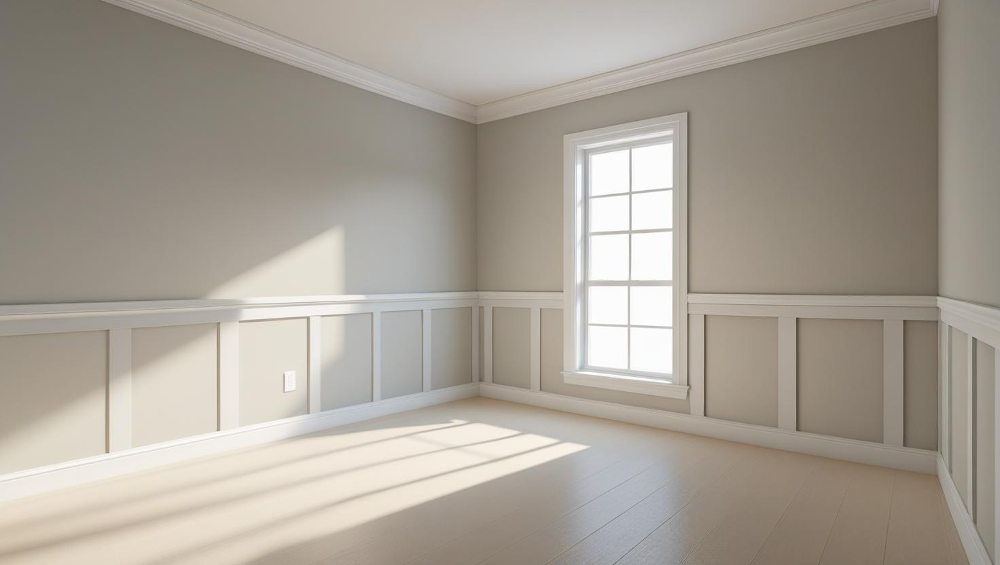
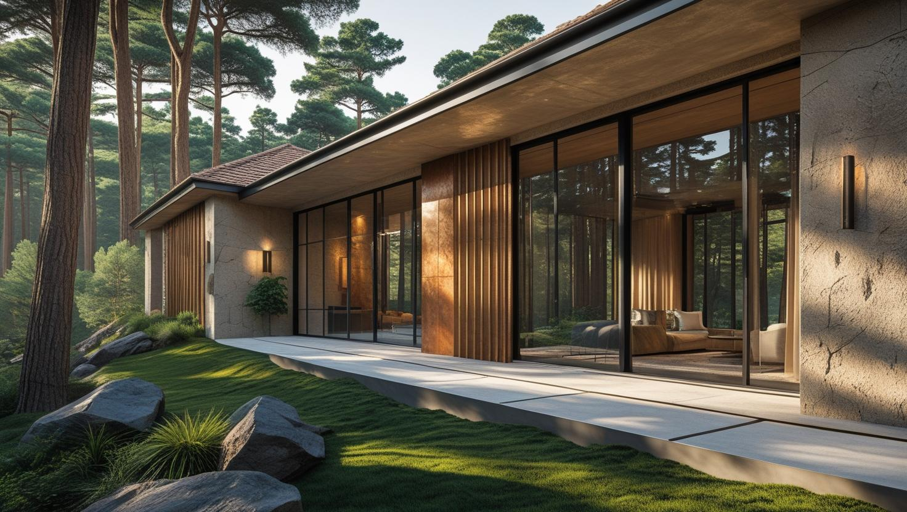
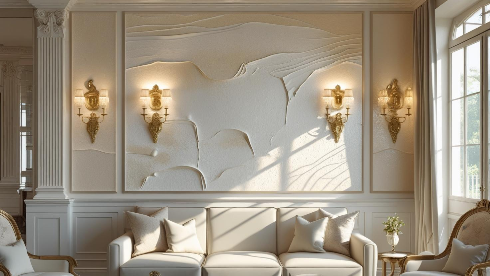

İstanbul Avcılar Profesyonel Boya Ustası
20 yıllık tecrübemizle Avcılar'da boyadan önce alçı ve sıva tamiri gereken apartman dairelerinde, merdiven boşluklarında ve dış cephelerde çalışıyoruz; hazırlık kalemlerini teklifte ayrı gösteriyoruz.
Avcılar'da Boya Badana: Öğrenci Kirası, Kiracı Değişimi ve Nem
Avcılar boyacı ve Avcılar boyacı ustası talebinin belirgin bir kısmı kiracı değişiminden geliyor. İlçede üniversite yerleşkesi çevresindeki kiralık daire yoğunluğu, yılın belirli dönemlerinde boş daire boyama işini öne çıkarıyor. Boş dairede ekip eşya toplamayla vakit kaybetmediği için iş belirgin biçimde kısalıyor.
Yapı stoğunun önemli bölümü orta yaşlı çok katlı apartmanlardan oluşuyor. Bu binalarda sık karşılaştığımız iş kalemleri kabarmış eski boyanın raspası, duvar ve tavan çatlakları ile ıslak hacim çevresindeki dökülmeler.
Konum itibarıyla hem Marmara hem Küçükçekmece Gölü tarafından gelen nem, alt katlarda ve dış duvara sırtını veren odalarda kendini gösterebiliyor. Bu odalarda astar seçimi boyanın ömrünü belirleyen ana etken; lekenin üstünü boyamak kalıcı sonuç vermiyor.
Avcılar boya ustası olarak apartman ortak alanı ve merdiven boşluğu işlerini de üstleniyoruz.
Hizmetlerimiz

İç Mekan Boyama
Avcılar'daki çok katlı apartman dairelerinde iç cephe boyama genellikle tamiratla birlikte ele alınır. Banyo tavanı, mutfak arkası ve dış duvara bakan oda köşeleri keşifte ayrıca kontrol edilir.
- Banyo ve mutfakta buhara dayanıklı boya
- Tavan kenarı dökülmelerinde alçı tamiri
- Kabaran boyada raspa ve astar
- Kapı ve kasa boyama

Dış Cephe Boyama
Çok katlı apartmanlarda dış cephe boyası, balkon altlarındaki sıva dökülmeleri ve yağış suyunun iz bıraktığı saçak kenarları onarılmadan uzun ömürlü olmaz. Cephe temizliği, onarım ve boya aynı iskele kurulumu içinde sırayla yapılır.
- Cephe temizliği ve çatlak onarımı
- Mantolamalı cephede çatlak kontrolü
- Balkon altı ve saçak kenarı onarımı
- Bina girişi ve bahçe duvarı boyası

Dekoratif Boyama
Kiracı değişiminin sık yaşandığı dairelerde efektli boya yerine sade ve kolay rötuşlanan renkler daha pratik olabilir. Ev sahibinin kendi oturduğu dairede ise salon ya da antrede beton veya mermer efektli tek bir duvar mekânın havasını değiştirmeye yeter.
- Antrede mermer görünümlü yüzey
- Dokulu İtalyan boya uygulaması
- Kiralık daire için kolay rötuşlanan tonlar
- Salonda tek duvarlık vurgu rengi
Fiyat Tablosu
| Hizmet Türü | Metrekare Fiyatı | Ortalama Süre (100m²) | Garanti |
|---|---|---|---|
| İç Cephe Boyama | 100-200 TL | 2-3 Gün | Uygulama kapsamına göre |
| Dış Cephe Boyama | 180-280 TL | 3-5 Gün | Uygulama kapsamına göre |
| Dekoratif Boyama | 250-500 TL | 4-7 Gün | Uygulama kapsamına göre |
| Ofis Boyama | 150-250 TL | 2-4 Gün | Uygulama kapsamına göre |
Metrekare fiyatları yaklaşık ön değerlendirme aralığıdır. Uygulanacak ölçüm yöntemi, boyanacak alanın kapsamı, yüzey durumu, tamirat ihtiyacı, kat sayısı ve malzeme seçimi keşif sırasında netleştirilir.
Dış cephe boya fiyatları uygulama alanı için yaklaşık 180–280 TL/m² aralığındadır. Kesin hesaplama yöntemi ve teklif; yüzey durumu, bina yüksekliği, erişim veya iskele ihtiyacı, tamirat kapsamı, boya sistemi ve uygulanacak kat sayısına göre keşif sırasında netleştirilir.
Uygulama kapsamına göre işçilik garantisi sağlanır. Garanti kapsamı ve istisnaları teklif veya iş sözleşmesinde belirtilir.
Bu rakamlar İstanbul Boyacılık'ın 2026 gösterge fiyat aralığıdır. Bir piyasa ortalaması değildir. Kesin fiyat; yüzey durumu, hazırlık ve tamirat miktarı, uygulanacak kat sayısı, seçilen malzeme sınıfı, ulaşım ve kat koşulları ile evin eşyalı mı boş mu olduğu keşifte görüldükten sonra belirlenir.
Avcılar'da aralığın alt tarafında kalan işler genellikle boş ve tamirat gerektirmeyen kiralık daireler oluyor. Aralığın üstüne çıkaran şey alt katlarda ve nem gören odalarda çıkan raspa, dökülme onarımı ve ek astar ihtiyacı.
Avcılar'da Boya Badana ve Tamirat: Boyadan Önce Neler Onarılır?
Avcılar'da boya badana tamirat işlerinde boya, onarımın üzerine gelen son adımdır. Kabaran boya, sıva çatlağı ve tavan kenarı dökülmesi giderilmeden sürülen boya aynı kusurları kısa sürede yeniden gösterir.
- Pul pul kalkan boya: Gevşek katman kazınır, kenarları zımparalanır ve yüzey astarlanır.
- Sıva ve alçı çatlakları: İnce çatlaklar dolgu ile kapatılır; aynı yerde tekrarlayan çatlaklarda gerekirse file ile güçlendirme yapılır.
- Delik ve darbe izleri: Dübel, çivi ve eşya çarpması izleri alçı ile doldurulup düzeltilir.
- Islak hacim çevresi: Banyo tavanında ve lavabo arkasında gevşeyen yüzey temizlenir, neme dayanıklı bir sistemle yeniden kurulur.
Tesisat kaçağı ya da çatıdan gelen su gibi bir kaynak varsa bu, tesisat veya yalıtım ustasının işidir; boyacının yaptığı tamirat ancak kaynak giderildikten sonra kalıcı olur. Kabarmanın nedenlerini boya neden kabarcık yapar rehberimizde ayrıntılı anlattık.
Banyo, Mutfak ve Tavanda Yüzeye Göre Boya Seçimi
Bir dairenin tamamında tek tip boya kullanmak, ıslak hacimlerde ve sık silinen duvarlarda erken yıpranmaya yol açar. Her yüzeye kullanımına uygun boyayı seçmek, bir sonraki boya ihtiyacını da geciktirir.
- Banyo tavanı ve duvarı: Buhara ve neme dayanıklı, küf önleyici katkılı iç cephe boyası.
- Mutfak: Yağ lekesinin silinebildiği, yıkanabilir özellikte boya.
- Tavan: Işığı dağıtan mat tavan boyası; kenar onarımından sonra astarla birlikte uygulanır.
- Kapı ve kasa: Mevcut boyanın yağlı mı su bazlı mı olduğuna bakılarak zımpara ve uygun astarla boyanır.
Hangi odada hangi boyanın kullanılacağı teklifte ayrı yazılır; böylece banyoya ya da mutfağa sıradan bir iç cephe boyası sürülüp sürülmeyeceğini baştan görürsünüz.
Apartman Merdiven Boşluğu Boyasında Karar ve Kapsam
Merdiven boşluğu apartmanın ortak alanıdır; boyatma kararını tek bir daire sahibi değil, yönetici ve kat malikleri birlikte verir. Teklifin netleşmesi için hangi yüzeylerin işe dahil olacağı baştan belirlenmelidir.
- Duvarlar, tavanlar, kat sahanlıkları ve giriş holü
- Merdiven korkuluğu ve bina giriş kapısı
- Duvarın alt bölümünde silinebilir ve darbeye dayanıklı boya bandı
Giderin daireler arasında nasıl bölüneceği, apartmanın yönetim planında yazanlara ve toplantıda alınan karara bağlıdır. Fiyatın nasıl hesaplandığını apartman merdiveni boyama fiyatları yazımızda bulabilirsiniz; kat sakinlerini rahatsız etmeden nasıl çalıştığımızı ise sık sorulan sorularda anlattık.
D-100'e ve Sahile Yakın Binalarda Dış Cephe Boyası
Avcılar'da ana yola bakan cepheler toz ve is, deniz tarafına bakan cepheler ise nem ve rüzgâr nedeniyle farklı hazırlık ister. Hangi sistemin uygun olduğu cephenin yönüne ve mevcut yüzeyin durumuna göre keşifte belirlenir.
Yol tarafındaki cephede boyadan önce yüzeydeki is tabakasının temizlenmesi gerekir; aksi hâlde yeni boya yüzeye iyi tutunmaz. Deniz tarafındaki cephelerde çatlak ve derzlerin iyi kapatılması, suyun sıva arkasına geçmesini önler.
Cephe işine apartmanın ortak kararıyla başlanır. Yola bakan cephede iskele yaya kaldırımını kapatacaksa, işe başlamadan önce belediyenin izin koşullarını öğrenmek gerekir; takvim bu izin ve hava durumu dikkate alınarak yönetimle birlikte kurulur.
Avcılar’da Hizmet Verdiğimiz Yerler
Üniversite çevresindeki kiralık dairelerden sahile yakın apartmanlara kadar aşağıdaki mahallelerde tamirat ve boya keşfi yapıyoruz:
Avcılar Mahalleleri
- Avcılar Ambarlı Mahallesi
- Avcılar Cihangir Mahallesi
- Avcılar Denizköşkler Mahallesi
- Avcılar Firuzköy Mahallesi
- Avcılar Gümüşpala Mahallesi
- Avcılar Merkez Mahallesi
- Avcılar Mustafa Kemal Paşa Mahallesi
- Avcılar Tahtakale Mahallesi
- Avcılar Üniversite Mahallesi
- Avcılar Yeşilkent Mahallesi
Avcılar Boyacılık Müşteri Yorumları
"İstanbul Boyacılık Avcılar ekibinden çok memnun kaldık. Daire boyama işimizi tertemiz ve tam zamanında teslim ettiler."
Figen Aksoy
Mustafa Kemal Paşa / Avcılar
"Ofis boyama hizmeti için Avcılar’da güvenilir boyacı ararken İstanbul Boyacılık’la tanıştık. Gerçekten profesyonel ve çözüm odaklı bir ekip."
Harun Yıldız
Cihangir / Avcılar
"Dekoratif boyama işinde detaylara gösterdikleri özen bizi çok etkiledi. Avcılar iç cephe boyacı ustası arayanlara kesinlikle tavsiye ederim."
Derya Öztürk
Gümüşpala / Avcılar
Faydalı Bağlantılar
Avcılar boya badana planında fiyat hesabı, boya markası ve yakın ilçe seçeneklerini birlikte değerlendirmek için aşağıdaki rehberler kullanılabilir.
Avcılar Boyacı Ustası — Tamirat, Kiralık Daire ve Apartman Soruları
Avcılar'da boya badana tamirat işi teklife nasıl yansıyor?
Tamirat, boya metrajından ayrı bir kalem olarak yazılır. Keşifte kazınacak alan, doldurulacak çatlaklar ve yeniden yapılacak tavan kenarları görülür; eski boya kazındığında daha geniş bir onarım çıkarsa işe devam etmeden önce bunu size bildiririz.
Kiracı çıkışında boş daireyi ne kadar sürede boyayabilirsiniz?
Boş dairede eşya toplama ve tekrar yerleştirme adımları olmadığı için iş belirgin biçimde kısalıyor. Kesin süre metrekareye ve çıkan tamirat miktarına bağlı. İşin kapsamı ve o gün ekip müsaitliği uygunsa hızlı başlangıç mümkün olabiliyor; bunu keşiften sonra net söylüyoruz.
Tavandaki sarı su lekesi boyayla kapanır mı?
Suyun geldiği yer giderildiyse kapanır, ancak normal tavan boyası lekeyi bir süre sonra yeniden gösterebilir. Önce kurumuş lekeye leke kapatıcı astar sürülür, ardından tavan boyası uygulanır. Leke hâlâ ıslaksa önce üst kattan ya da tesisattan gelen suyun durdurulması gerekir.
Alt kattaki dairemde duvar sürekli nem yapıyor, boya çözer mi?
Boya tek başına çözmez. Alt katlarda nemin kaynağı çoğu zaman zeminden gelen rutubet ya da yalıtım eksikliği oluyor; kaynak dururken uygulanan boya kısa sürede kabarıyor. Keşifte kaynağı değerlendirip önce çözülmesi gerekeni söylüyoruz, ardından uygun astar sistemini uyguluyoruz.
Avcılar'da keşif için dairenin boş olması gerekiyor mu?
Gerekmiyor. Eşyalı dairede de keşif yapılır; duvarların ve tavanın görülebilmesi yeterli. Daire kiradaysa ve kiracı hâlâ oturuyorsa, keşif saatini onunla birlikte ayarlamanız işi kolaylaştırır.
Apartman merdiven boşluğunu kat sakinlerini rahatsız etmeden boyayabilir misiniz?
Evet. Merdiven boşluğunda bölüm bölüm ilerliyoruz: çalışılan katı işaretliyor, zemini ve korkuluğu örtüyor, giriş çıkışın açık kalmasını sağlıyoruz. Yönetimle çalışma saatlerini önceden konuşuyoruz.
İletişim
İşletme merkezi: Orta, Demirkapı Cd. No:1, 34030 Bayrampaşa/İstanbul
İşletme merkezini Google Haritalar’da görüntüleyin
İletişim Bilgileri
Telefon: 0507 832 29 12
E-posta: boyaustamistanbul@gmail.com
10+ Uzman Ustamızla Avcılar ve çevresine hizmet veriyoruz.
Çalışma Saatleri: 7/24 (Pzt-Paz 00:00-23:59)